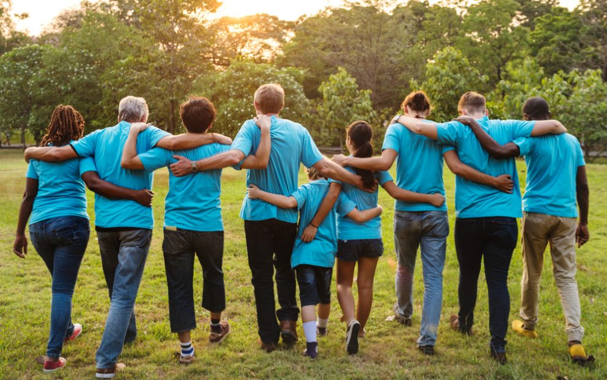
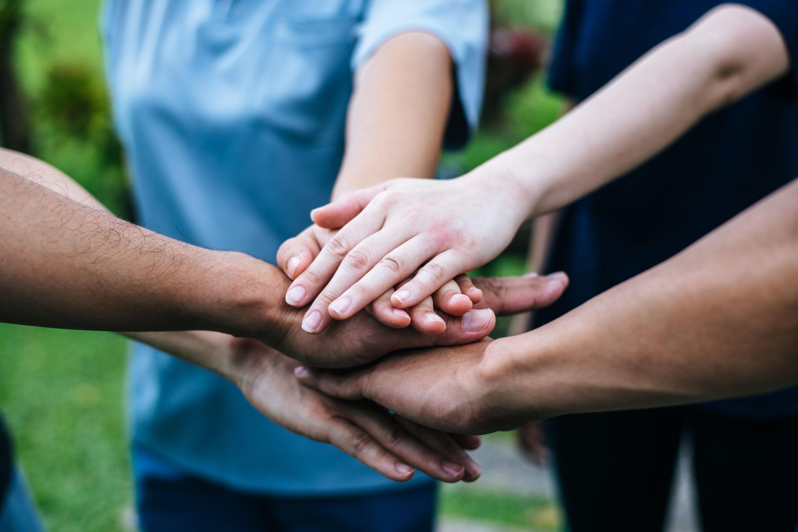

Esporte: Patinação - Primeiros Passos
A patinação é o coração físico do projeto e a tradução literal de aprender a cair e levantar. Focamos nos primeiros passos, acolhendo iniciantes que nunca colocaram um par de patins nos pés.
A Vida em Movimento
O Projeto Ginga é um coletivo que enxerga a "ginga" não apenas como um movimento físico, mas como a habilidade vital de se adaptar, contornar obstáculos e reinventar a própria realidade. Atendemos crianças e jovens em situação de vulnerabilidade, oferecendo um espaço seguro onde eles podem descobrir seu próprio ritmo. Acreditamos que, assim como na música, é preciso entrar na roda, ter fé e saber que, mesmo quando a vida tenta nos derrubar, a gente tem a força para levantar e continuar jogando.

Nosso propósito é ensinar crianças e jovens a "cair e levantar" construindo resiliência, autonomia e autoconfiança. Queremos transformar realidades equipando a nova geração com as ferramentas necessárias para navegar pelas adversidades da vida. Fazemos isso unindo o movimento do corpo, a expressão da alma e as ferramentas do futuro, garantindo que nenhum talento seja perdido pela falta de oportunidade.
Atuamos por meio de trilhas de aprendizado integradas, onde o jovem não é apenas um aluno, mas o protagonista de sua própria jornada. Nossas oficinas funcionam de forma multidisciplinar: a disciplina e o equilíbrio aprendidos nas pistas de patinação alimentam a confiança necessária para os palcos de dança e música, que, por sua vez, estimulam a criatividade aplicada na resolução de problemas dentro dos laboratórios de tecnologia. O projeto cria um ecossistema de acolhimento onde errar faz parte do processo, e tentar de novo é a regra principal.

A patinação é o coração físico do projeto e a tradução literal de aprender a cair e levantar. Focamos nos primeiros passos, acolhendo iniciantes que nunca colocaram um par de patins nos pés.
Este pilar é o canal de expressão, identidade e voz dos nossos jovens. Com foco em ritmos urbanos, percussão, canto e danças populares, oferecemos um espaço onde o corpo e a mente trabalham em sincronia.
A tecnologia é a ferramenta que conecta a resiliência e a criatividade dos nossos jovens às oportunidades do futuro. Focamos no ensino de lógica de programação, desenvolvimento web, design e inovação digital.